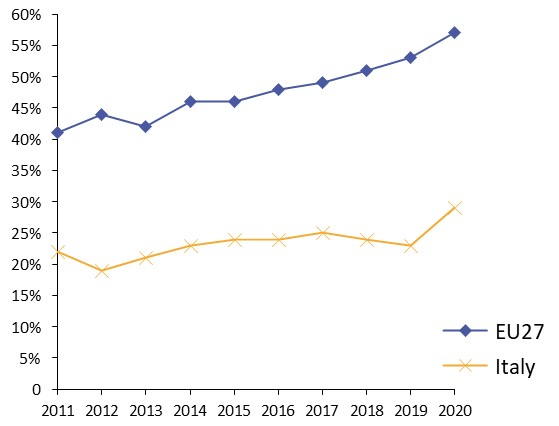
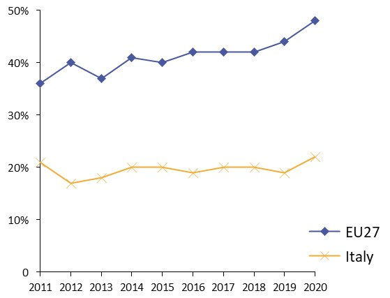
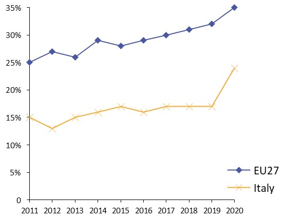
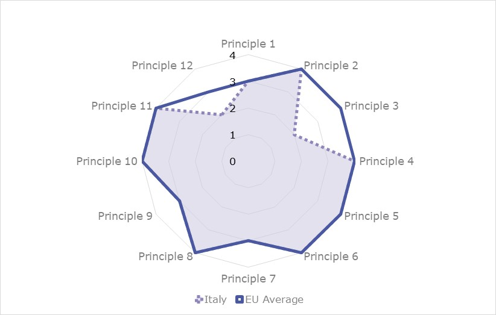
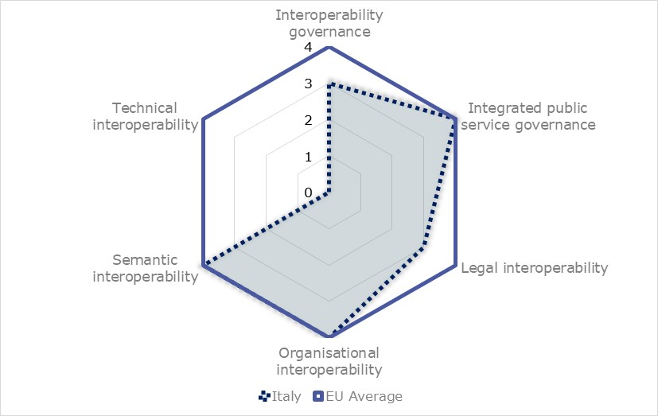
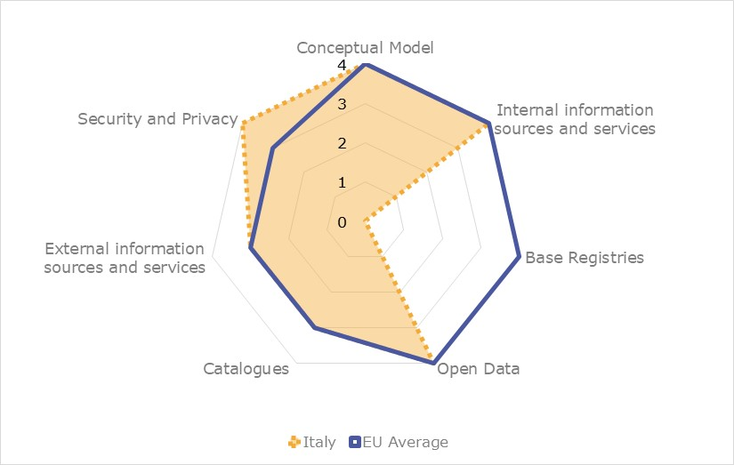
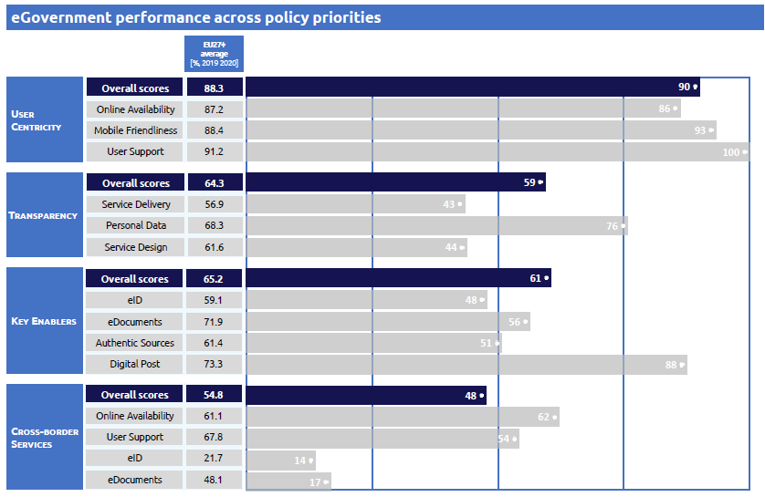

Digital Public Administration factsheet 2021
Italy
Table of Contents
Digital Public Administration factsheet 2021
2 Digital Public Administration Highlights 10
3 Digital Public Administration Political Communications 12
4 Digital Public Administration Legislation 22
5 Digital Public Administration Governance 30
6 Digital Public Administration Infrastructure 37
7 Cross-border Digital Public Administration Services for Citizens and Businesses 46
Please note that the data collection exercise for the update of the 2021 edition of the Digital Public Administration factsheets took place between March and June 2021. Therefore, the information contained in this document reflects this specific timeframe.
Country
Profile
1
Country Profile
Basic data
Population: 59 729 081 inhabitants (2020)
GDP at market prices: EUR 1 651 595 million (2020)
GDP per inhabitant in PPS (Purchasing Power Standard EU 27=100): 94 (2020)
GDP growth rate: -8.9% (2020)
Inflation rate: -0.1% (2020)
Unemployment rate: 9.2% (2020)
General government gross debt (Percentage of GDP): 155.8 (2020)
General government deficit/surplus (Percentage of GDP): -9.5 (2020)
Area: 301 338 km²
Capital city: Rome
Official EU language: Italian
Currency: Euro (EUR)
Source: Eurostat (last update: 22 June 2021)
Digital Public Administration Indicators
The following graphs present data for the latest Generic Information Society Indicators for Italy compared to the EU average. Statistical indicators in this section reflect those of Eurostat at the time the Edition is being prepared.
Percentage of individuals using the internet for interacting with public authorities in Italy | Percentage of individuals using the internet for obtaining information from public authorities in Italy |
 |  |
Percentage of individuals using the internet for downloading official forms from public authorities in Italy | Percentage of individuals using the internet for sending filled forms to public authorities in Italy |
 |
|

Interoperability State of Play
In 2017, the European Commission published the European Interoperability Framework (EIF) to give specific guidance on how to set up interoperable digital public services through a set of 47 recommendations. The picture below represents the three pillars of the EIF around which the EIF Monitoring Mechanism was built to evaluate the level of implementation of the EIF within the Member States. It is based on a set of 71 Key Performance Indicators (KPIs) clustered within the three main pillars of the EIF (Principles, Layers and Conceptual model), outlined below.

Source: European Interoperability Framework Monitoring Mechanism 2020

Source: European Interoperability Framework Monitoring Mechanism 2020

Source: European Interoperability Framework Monitoring Mechanism 2020

Source: European Interoperability Framework Monitoring Mechanism 2020
eGovernment State of Play
The graph below presents the main highlights of the latest eGovernment Benchmark Report, an assessment of eGovernment services in 36 countries: the 27 European Union Member States, as well as Iceland, Norway, Montenegro, the Republic of Serbia, Switzerland, Turkey, the United Kingdom, Albania and Macedonia (referred to as the EU27+).
The study evaluates online public services on four dimensions:
- User centricity: indicates the extent to which a service is provided online, its mobile friendliness and its usability (in terms of available online support and feedback mechanisms).
- Transparency: indicates the extent to which governments are transparent about (i) the process of service delivery, (ii) policy making and digital service design processes and (iii) the personal data processed in public services.
- Cross-border services: indicates the extent to which users of public services from another European country can use the online services.
- Key enablers: indicates the extent to which technical and organizational pre-conditions for eGovernment service provision are in place, such as electronic identification and authentic sources.
The 2021 report presents the biennial results, achieved over the past two years of measurement of all eight life events used to measure the above-mentioned key dimensions. More specifically, these life events are divided between six ‘Citizen life events’ (Career, Studying, Family life, measured in 2020, and Starting a small claim procedure, Moving, Owning a car, all measured in 2019) and two ‘Business life events’ (Business start-up, measured in 2020, and Regular business operations, measured in 2019).

Source: eGovernment Benchmark Report 2021 Country Factsheets

Digital Public Administration Highlights
2
Digital Public Administration Highlights
Digital Public Administration Political Communications
In May 2020, the Italian government has been appointed as member of the Steering Committee of the Open Government Partnership. Hence, as member of the committee, the Italian government will play an important role in bringing together governments, the civil society and all the other stakeholders to guarantee an open and effective response to the COVID-19 crises.
On 2 July 2020, the Ministry of Economic Development (MISE) published the National Strategy on Artificial Intelligence (AI). The strategy is structured in three parts. The first part includes an assessment of the global, European, and Italian AI markets. The second contains the foundations of the strategy, while the third part brings forward several proposals on AI governance as well as the necessity of an agile and adaptive legislative framework.
On 21 July 2020, the Presidency of the Council of Ministries has approved the National strategy for digital competences. The strategy accounts for the relevance to digital competences given by the European Commission in its communication (COM/2020/67) “Shaping Europe’s digital future.” The strategy acknowledges that digital competences represent a strategic priority for social and economic growth.
Digital Public Administration Legislation
The Circular No. 1 of 9 September 2020 defines the new interoperability guidelines for Public Administration Bodies in line with the EIF model. The guidelines set the technical interoperability that all public administrations have to comply with in order to ensure the interoperability of their systems with third parties and to foster the implementation of the national information technology (IT) system of the public administration.

Digital Public Administration Political Communications
3
Digital Public Administration Political Communications
Specific political communications on digital public administration
2025 National Innovation Plan
In February 2020, the Ministry of Innovation Technology and Digitalisation launched the 2025 National Innovation Plan. The plan includes 20 main digitalisation actions to be put in place by 2025, aiming at the same time to promote more democracy, ethics and inclusion.
The 2025 National Innovation Plan is based on the analysis of the United Nations Sustainable Development Goals. This analysis allowed policymakers to identify three main objectives:
- Digitalisation of society;
- Innovation of the country; and
- A sustainable and ethical development for society at large.
The first objective concerns the achievement of a digital society, where citizens and businesses can easily benefit from digital public services provided by the public administration.
The second objective seeks to promote the reuse of new technologies within the Italian industry and to foster high-tech sectors such as robotics, smart mobility, AI and cybersecurity.
The third objective addresses all human-related challenges linked with the fourth industrial transformation. The plan will promote inclusive, transparent and sustainable innovation that will benefit the whole society by providing equal opportunities for the participation in the digital society while ensuring transparency.
On 21 July 2020, the Presidency of the Council of Ministries has approved the National Strategy for Digital Competences. The strategy accounts for the relevance given to digital competences by the European Commission in its communication (COM/2020/67) Shaping Europe’s digital future. The strategy acknowledges that digital competences represent a strategic priority for social and economic growth. In this regard, a sustainable social and economic growth shall occur only if three conditions are in place:
- Increase of digital awareness among the population – this would enable citizens to better exploit the benefits stemming from the digital world;
- Acquisition of general and specific digital competences by public administrations and companies – these competences would help them to improve the way they provide services to their users; and
- Reorganisation of the educational system to address the need to develop digital competences.
The National Strategy for Digital Competences seeks to achieve these objectives by relying on the following principles:
- Digital education – digital awareness and digital competences are paramount characteristics of citizenship and should be facilitated both by public and private efforts in schools, universities and media;
- Digital citizenship – technology can foster the development of new forms of citizenship based on quality information, active participation in decision‑making processes, civil interaction and smoother relations between citizens and the public administration; and
- Digital ethics – the digital world can become a space of equality and development both for the community and the individuals.
2014-2020 Digital Growth Strategy
The new national Ultra-Wideband Plan proposed a virtuous mix of public and private investments. If individuals invest as much as the public sector, the goal that can be reached is higher than the European minimum. The objective of the Italian Ultra-Wideband Plan is to bridge this infrastructure gap, creating favourable market conditions for the integrated development of the telecommunications infrastructure, fixed and mobile, with actions such as:
- Incentives aimed at bringing down the barriers of implementation costs, simplifying and reducing administrative burdens;
- Coordination in the management of the subsurface through the establishment of a below and above-ground register to ensure the monitoring of operations and the best use of existing infrastructure;
- Alignment with other European countries in the field of electromagnetism limits;
- Tax incentives and credit at subsidised rates in the most profitable areas to promote the quantum leap;
- Public incentives to invest in marginal areas;
- Direct development of public infrastructure in the market failure areas.
Public resources are available through European funds such as the European Rural Development Fund (ERDF) and the European Agricultural Fund for Rural Development (EAFRD), the European Development Fund and the Cohesion Fund, for a total of EUR 6 billion, in addition to the funds from the Juncker Plan.
The national Ultra-Wideband Plan is tied to the Digital Growth Strategy. The strategy has been designed to adapt gradually to the scenarios in the 2014-2020 period. It is a strategy aimed at promoting digital literacy among citizens and businesses, with the help of public levers.
The Italia Login project stems from the Digital Strategy and aims to build the so-called Citizens’ House. The system is designed as an open structure where various actors from the public administration contribute to their area of expertise. The public administration creates a single platform and opens its data, providing services available to businesses and citizens. The necessary user-centric approach requires the development the public information system to be redesigned. Every citizen can access all the information and services concerning themselves on Italia Login.
Three-Year Plan for IT in the Public Administration
The Three-Year Plan for IT in the Public Administration was defined in accordance with the Digital Growth Strategy, with the aim of targeting public sector ICT investments according to government guidelines and in line with European goals and programmes. The plan proposes a systematic, distributed and shared management and use model applicable to the most innovative digital technologies. This approach would be characterised by an agile and evolutionary management style, based on clear governance of the various levels of public administration. The synergy and balance between the three pillars (innovative technologies, agile management style and clear and effective model of governance) ensures the country is more effective in benefiting from new technologies and provides citizens with an advantage in terms of ease of access and improvement of existing digital services.
The AgID is in charge of executing the plan and coordinating the support to central and local public administration bodies in the implementation of the plan.
In March 2019, the former Minister for Simplification and Public Administration, Giulia Bongiorno, approved the 2019-2022 Three-Year Plan for Information Technology in the Public Administration. The new plan foresees actions to accelerate the transition to digital administrations and local entities and to empower citizens and businesses in being active protagonists of innovation.
The plan outlines the actions needed to promote the digital transformation of the public sector, moving in the same direction defined by the 2017-2019 plan. In particular, the new plan:
- Supports the inclusive path of digital growth of national and local governments, with greater involvement of the key actors of the digital transition;
- Defines the fundamental architectural principles, the interoperability rules of national infrastructures, and the cooperation model between different ecosystems and platforms;
- Facilitates the relationship between public administration bodies and the market, also involving private actors in the development of integrated and interoperable services; and
- Introduces a novel perspective to understand the digital transformation, with a particular focus on identifying the areas of intervention and the impact on the main actors (citizens, businesses and public administration bodies).
Designers Italia
Designers Italia is a national innovation project launched in June 2017 by the AgID and the Digital Transformation Team. It calls upon the world of design, both inside and outside the public administration, to strengthen the role of design thinking in the planning of digital public services.
Designers Italia is a meeting point between people and technology, with the aim of designing simple and citizen-friendly services.
Designers Italia represents the benchmark for public administration design: guides, tools and a forum to foster collaboration among designers and to strengthen the role of design in developing public services.
The main objectives of this project are:
- Understanding citizens’ needs across a plethora of situations and moods they experience while interacting with the public administration;
- Including people’s point of view in the process of designing and choosing technologies for public digital services;
- Striving to make technology simpler, through a process of continuous improvement; and
- Helping people understand the new digital tools, while giving them ways to familiarise themselves with changes.
The Designers Italia website contains several sections: service design, content design, user interface, user research, projects, a blog and some read the docs and discourse forums contributing to the drafting of texts and to the free exchange of views. Finally, the website also includes a Behance channel, where mainly web designers can share their projects.
The site is first and foremost a community of practices to strengthen skills, encourage networking, and facilitate the encounter between supply and demand. On the site, people can talk about concrete projects that can align the country’s top priorities. The government can compare best practices, thanks to a forum with sections dedicated to service design, user research, content design and user interface design. In each area the government publishes kits, which are a set of tools available to everyone: guides, checklists and templates, prototyping tools, and open-source coding to create digital services without having to reinvent the wheel.
Designers Italia is about a different and unique kind innovation thanks to the way it involves the stakeholders, and more generally citizens, through the forum and the use of Behance. This allows private designers to contribute, with their knowledge and experience, to the implementation of design guidelines.
Designers Italia is heading in the direction of creating a real and proper design system for the public administration.
The design system offered intends to:
- Affirm shared standards. The community serves to improve these standards and to evolve them by sharing experiences: for this reason, there is a forum with several discussion threads and a blog showcasing design case studies and trends. All people involved in design within the public administration can come forward and contribute;
- Foster dialogue between external professionals and the world of public administration. Thus, the project devotes space to information and operating tools on how to organise and participate in public procurement. All professionals interested in working to improve public services are invited to participate;
- Leverage common solutions, such as the PagoPA payment system, in order to initiate a process of continuous improvement and encourage the adoption by as many administrations as possible; and
- Create site and service templates; for that, designers have launched pilot projects in different areas (e.g. municipalities), thereby starting a process that will allow the community to generalise the identified solutions and make them available to others.
Public administration bodies have the capacity to either acquire the methodology and knowledge offered by designers to build their own services internally (internal resources or in-house service providers) or rely on the guidelines on design competitions and public procurement for external supplies. Guidelines are always updated thanks to the feedback of the community, becoming a living space for a constant and democratic debate.
In March 2019, the national guide for designing public administration web services were updated.
In addition, graphic components were provided to developers and designers through the new UI toolkit.
Cloud Strategy
The Cloud Strategy of the public administration was created to encourage the adoption of the cloud computing model, in line with the country’s guidelines on the Digital Growth Strategy and the provisions of the 2019-2021 Three-Year Plan for Information Technology in the Public Administration. The Cloud Strategy also aims to qualify services and cloud infrastructures according to specific security and reliability parameters suitable for the needs of public administration bodies, in accordance with the following principles:
- Improvement of service levels, accessibility, usability and security;
- Interoperability of services within the cloud model of public administration bodies;
- Reduction of the risk of vendor lock-in, i.e. creation of a dependency relationship with the service provider;
- Requalification of the offer, expansion and diversification of the suppliers’ market;
- Resilience, scalability, reversibility and data protection; and
- Opening up of the market to small and medium-sized enterprises (SMEs).
The adoption of the cloud infrastructure improves the operational efficiency of ICT systems, achieves significant cost reductions, makes it easier and cheaper to update software, improves security and data protection, and speeds up the delivery of services to citizens and businesses.
The cloud strategy outlined by AgID creates the prerequisites needed by public and private entities to provide cloud infrastructures and services to the public administration, so that the latter can adopt consistent cloud computing services and infrastructures that meet high security, efficiency and reliability standards in line with the provisions of circulars AgID No. 2 and No. 3 of 9 April 2018.
AgID has outlined the compliance requirements for security, performance and scalability, interoperability, portability, as well as the ones relating to the organisational and legislative aspects. Italian public administration bodies are looking for:
- Cloud service providers: Saas services (Software as a service), Iaas services (Infrastructure as a service) and Paas services (Platform as a service); and
- Cloud infrastructure providers: Cloud Service Providers, Cloud SPC 1, National Strategic Poles.
Providers who meet the quality requirements will then be able to be included in the Cloud Services Catalogue for public administration bodies, already available since July 2018. On this platform, all public administration bodies will have the opportunity to find out about the available infrastructures and services in order to guide their purchasing choices. Starting 1 April 2019, public administration bodies can acquire infrastructures and solutions through the Cloud Catalogue.
Berlin Declaration on Digital Society and the Value-Based Digital Government
In December 2020, the Italian government signed the Berlin Declaration on Digital Society and the Value-Based Digital Government, thus reaffirming its commitment – together with other EU Member States – to foster digital transformation in order to allow citizens and businesses to harness the benefits and opportunities offered by modern digital technologies. The declaration aims to contribute to a value-based digital transformation by addressing and strengthening digital participation and digital inclusion in European societies.
Interoperability
No political communication has been adopted in this field to date.
Key enablers
Access to public information
Fourth Open Government Partnership Action Plan
- Open data;
- Transparency;
- Register of beneficial owners;
- Support to participation;
- Regulating access of stakeholders to decision-makers in public administration;
- Culture of open government;
- Corruption prevention;
- Simplification;
- Digital services; and
- Digital citizenship and skills.
Along the most consolidated sectors of open government – open data, transparency, digital skills and services – the plan presents new measures on consultation policies, the register of beneficial owners and regulations on stakeholders, proving that opening processes are now mature.
The Fourth Action Plan relies upon two main innovations that will ensure a higher quality of commitments compared to the previous action plans. First, the involvement of the Open Government Forum represented a key element as both public administration bodies and civil society organisations were able to discuss and agree upon the objectives to be achieved by 2021. Second, the final document shifted from a high number of actions implemented by single administrations to a smaller number of actions shared by different administrations. This enabled a more efficient convergence of the actions and the optimisation of resources.
In May 2020, the Italian government has been appointed as member of the Steering Committee of the Open Government Partnership. Hence, as a member of the committee, the Italian government will play an important role in bringing together governments, the civil society and all the other stakeholders to guarantee an open and effective response to the COVID-19 crisis.
Third Open Government Partnership Action Plan
The central themes of the plan are open data and transparency, participation and accountability, digital citizenship and innovation.
With this new plan the Italian government wants to strongly relaunch its commitment on open government, transparency, digital citizenship, participation and accountability, which are also the fundamental objectives of the public administration. The plan contained 34 actions divided into three thematic areas:
- Open data and transparency (12 actions);
- Participation and accountability (16 actions);
- Digital citizenship and innovation (six actions).
The plan included actions that enabled the country to open up further, in line with such Open Government Partnership values as access to the public sector, civic participation, accountability and digitalisation of public administration.
After the adoption of the Freedom of Information Act (FOIA), which was part of the public administration reform, the government worked to ensure the right of civic access and monitor its implementation.
Furthermore, the plan includes the participation of local administrations: municipal and regional authorities are engaged in projects on corruption prevention and protection of digital rights.
eID and Trust Services
SPID – Public Digital Identity System
SPID is the solution that allows users to access all online public administration services with a single digital identity (username and password) that can be used from computers, tablets and smartphones. Its usage is becoming commonly accepted among public administration bodies and citizens: in 2020, more than 7000 public administration bodies and more than 15 million citizens decided to adopt it.
The use of SPID was extended to natural persons acting on behalf of legal entities. This would make it possible to replicate the effect of an authenticated signature.
SPID is rapidly evolving and AgID is currently working on different regulations to increase the involvement of the private sector either through the introduction of special entities called ‘aggregators’ or through the introduction of the so-called ‘attribute authorities’ that will release qualified attributes to citizens and professionals authenticated with SPID.
Soon, minors will also be able to obtain SPID identities, so we expect an important increase in the number of identities issued.
The introduction of the OpenID Connect technology to complement the SAML (Security Assertion Markup Language) technology currently in use will reduce the burden to authenticate the subjects requesting the SPID. As for eIDs, the dissemination of electronic identity cards made it possible to initiate the process of eID notification, pursuant to Article 9 of the eIDAS Regulation, which was fully implemented in the first half of 2019.
Electronic ID card
AgID started the process to integrate the Italian electronic ID card to be used within public administration bodies in the Member States.
Public consultations to define the guidelines to integrate the use of electronic ID cards for professional usage were concluded. The guidelines identified the way identity providers should proceed to release electronic ID cards for professional usage in order to verify the affiliation of individuals to organisations and their professional expertise.
The Italian eIDAS node is active and interconnected with Belgium, Estonia, Greece, Spain and Sweden. Italian citizens can access the public administration services offered by those countries.
Security aspects
Cybersecurity
AgID, in compliance with the Directive of the President of the Council of Ministers of 1 August 2015, undertook the designing and planning of useful strategies to ensure the resilience of the public administration national IT infrastructure. The goal was to increase the responsiveness, awareness and efficiency of the cybersecurity systems of public administration bodies to prevent the occurrence of events such as accidents or hostile actions aimed at compromising the normal provision of service. The first step was drafting the Guidelines for ICT Security of Public Administration Bodies and its reference within the Minimum ICT Security Measures for Public Administration Bodies document, published in 2016. More recently, as part of the programme for the implementation of the Digital Agenda, AgID launched the Italia Login project through which AgID aims at creating an integrated environment, from the infrastructure to applications, standards and norms, as a basis for the development and delivery of public administration services for citizens and businesses.
Acknowledging the potential impact of cyberattacks to which public administration bodies may be exposed, in 2018 a risk management methodology was designed and developed, starting from the solutions already in use in the private and public sector both nationally and internationally. The main characteristics are the following:
- Applicability to all public administration bodies (regardless of their size), technological complexity and types of services delivered to businesses, citizens and other public entities; and
- Suitability to be supported by an application tool that can be used by all public administration bodies and integrated with other central IT infrastructures such as Servizi.Gov.it.
Starting from the second half of 2018, PAC and PAL were involved in the experimentation of the cyber risk self-assessment tool developed by AgID. In 2019 and 2020 the number of administrations involved in using the risk assessment tool has consistently grown.
Interconnection of base registries
eProcurement
No political communication has been adopted in this field to date.
Domain-specific political communications
No political communication has been adopted in this field to date.
Emerging technologies
Artificial Intelligence and blockchain
The MISE established two expert groups on AI and blockchain.
In March 2018, the first White Paper on Artificial Intelligence at the Service of Citizens was presented in Rome by the AgID’s IA Task Force.
The White Paper illustrated the guidelines and recommendations for the sustainable and responsible use of artificial intelligence in the public administration and it represented the first step to connect public administration bodies and the private sector. The aim was to match supply and demand for innovative services.
In January 2019, meetings of expert groups on AI, blockchain and distributed registers were conducted. The opening meeting set the national strategies, outlining the objectives, agenda and working methods of the different groups. Elements for comparison were also defined:
- For AI: enhancing research, bringing IA from the laboratory to the market; education, skills and lifelong learning; attracting and encouraging qualified investments in AI; data as a new production factor; regulatory framework and ethical impacts; improving public services through AI; and
- For blockchain and distributed registers: characteristics of technology and evolutionary lines; the role of Italy in the European scenario; Italian experiences in the private and public sector; Italian research and experimentation on blockchain and distributed registers; the fourth industrial revolution – the world of production and the exchange of value; education, skills and lifelong learning; towards the creation of a regulatory framework of reference; strategic sectors and enabling use cases - certification and protection of Made in Italy.
National Strategy on Artificial Intelligence
On 2 July 2020, the MISE published the National Strategy on Artificial Intelligence. The strategy is structured in three parts. The first part includes an assessment of the global, European, and Italian AI markets. The second contains the foundations of the strategy, while the third part brings forward several proposals on AI governance as well as the necessity of an agile and adaptive legislative framework.
The strategy presents 82 proposals that have been drafted and discussed since the first half of 2019. The original draft has been challenged during a public consultation between August and September 2019 and has eventually been reviewed and updated in February 2020. The work performed over these 18 months resulted in several ambitious proposals tailored to the Italian economy that aim to address both competitiveness and sustainability issues within the European framework for AI. Particularly, the National Strategy on AI outlines:
- 10 general recommendations;
- 17 specific recommendations on AI for human beings;
- 41 specific recommendations on the creation of a productive and reliable ecosystem;
- 7 specific recommendations on sustainable development; and
- 7 specific recommendations on the implementation of the strategy.

Digital Public Administration
Legislation
4
Digital Public Administration Legislation
Specific legislation on digital public administration
Law No. 160/2019
Law No. 160/2019 aims at further supporting the Italian Digital Agenda by earmarking EUR 5 million for a two-year period between 2020 and 2021. Additionally, the law assigns to the Department of the Presidency of the Council of Ministers a new role in the identification, promotion and management of projects related to innovation technology and digital transformation. Lastly, the law foresees the development of a digital notifications platform. This platform shall be used by all public administration bodies.
Circular No. 3/2018
As part of the initiatives for the digital transformation of public administration bodies, the Minister for Simplification and Public Administration, Giulia Bongiorno, issued Circular no. 3 of 1 October 2018, which urged all public administration bodies to identify within their organisations a person responsible for the digital transition.
Legislative Decree No. 217/2017
The last reform of the Digital Administration Code (Codice dell’Amministrazione Digitale – CAD) laid down the legal foundations for many of the services established in the Three-Year Plan for IT in the Public Administration.
Many online services are already being implemented, such as the Digital Citizenship or the Data and Analytics Framework (DAF), and even the service for the selection of citizens’ digital domicile.
The latest version of the code set forth important modifications, as for instance:
- Definition of open format, open data, digital domicile, digital citizenship;
- Electronic signature and other means foreseen by the eIDAS Regulation 2014/910, in order to be compliant with EU law;
- Simplified process in order to issue technical guidelines under the responsibility of the AgID;
- Provision of a new public repository for the retrieval of documents subject to transparency obligations and new rules about eDocument management;
- Provision of a new national data platform (Piattaforma Digitale Nazionale Dati), in order to simplify the knowledge of public informative assets;
- Extended use of the ePayment platform; and
- Reuse of software among public administration bodies.
Legislative Decree No. 179/2016
Legislative Decree no 179 of 26 August 2016 amended the Digital Administration Code (DAC) and introduced new changes and integrations to the code.
The main objective of the reform was to shift the focus from the digitalisation process to the digital rights of citizens and businesses. The Digital Citizenship Chart recognised rights directly to citizens and enterprises. This became the legal basis for the implementation of Italia Login, a platform that enables to access public services through the public digital ID system (SPID).
Legislative Decree No. 133/2014
The Legislative Decree no 133 of 12 September 2014, bearing the title “Urgent Measures to Reopen Public Construction Projects, Complete Public Works, Digitise of the Country, Simplify Bureaucracy, Tackle the Hydrogeological Instability Threat and Resume Business Activities”, was approved by the Legislature to strengthen the national economy and reduce bureaucracy. It contained measures on the reopening of public construction projects (i.e. arts. 1-4); the enhancement of highway and telecommunications networks (i.e. arts. 5-6); environmental protection and the mitigation of hydrogeological instability (i.e. arts. 7-8); cutting red tape (i.e. arts. 9-16); revive building activities (i.e. arts. 17-27); ports and airports (i.e. arts. 28-29); reactivate investment in the country, particularly through the promotion of the Made in Italy brand (i.e. arts. 30-32); environmental remediation and urban regeneration in areas of national interest (i.e. arts. 33-35); energy-related matters (i.e. arts. 36-39); and financial affairs within the purview of local authorities (i.e. arts. 40-45).
Legislative Decree No. 69/2013
Legislative Decree No. 69/2013 – ‘Urgent Measures for Economic Recovery: Measures to Enhance the Digital Italian Agenda’ – was passed. Legislative Decree No. 69/2013 defines new interventions to strengthen the Italian Digital Agenda in the eID area.
Legislative Decree No. 179/2012
The Legislative Decree no 179 of 18 October 2012 – ‘Further Urgent Measures for the Country’s Growth and the Implementation of the Italian Digital Agenda’ – was passed with the aim of introducing important measures to foster the creation and development of innovative start-up companies in Italy by amending the Italian civil code provisions affecting company law as well as the relevant tax regime.
Legislative Decree No. 83/2012
Legislative Decree no 83 of 22 June 2012 – ‘Urgent Measures for the Country’s Growth’ – sets up the AgID, subject to the supervision of the Prime Minister or the Deputy Prime Minister, the Minister of Economy and Finance, the Minister for Public Administration and Simplification, the Minister of Economic Development and the Minister of Education, University and Research. Under this legislative decree, the Italian government has approved legislation to provide methods of funding for unlisted companies beyond traditional loan financing – in particular, it aims to improve access to capital markets for SMEs by facilitating the issue of short-term and mid to long-term debt.
Legislative Decree No. 235/2010
The new DAC was modified to include regulations in line with the ongoing technology development. Important changes and supplements were recently introduced by Legislative Decree no 235 of 30 December 2010, which further updated the regulatory framework on the subject of digital administration. The code introduced a group of regulatory changes that had a concrete impact on the administration’s conduct and practices, as well as on the quality of the services rendered to citizens and businesses. These included guaranteeing greater transparency, timelines, accessibility and efficiency. The most recent reform went into effect on 25 January 2011, with the phase-in of the initiatives planned for 2012, consistently with the eGovernment Plan. The new DAC endorsed new rights for citizens and businesses, as well as new opportunities and obligations for public administration bodies.
eGovernment Code
The eGovernment Code (Codice dell’Amministrazione Digitale) entered into force in March 2005. It aimed to provide a clear legal framework for the development of eGovernment and for the emergence of an efficient and user-friendly public administration. The code granted citizens and businesses the right to demand and obtain the use of electronic means by public administration bodies, in their day-to-day transactions with the users.
In February 2007, to facilitate the implementation of the eGovernment Code and accelerate the digitisation of Italian public offices, the Minister for Reform and Innovation within Public Administration signed a Ministerial Order on the exchange of data among public administration bodies and the publication of negotiation activities (known as the Innovation Directive).
Interoperability
New Interoperability Guidelines for Public Administration Bodies
The Circular no 1 of 9 September 2020 defines the new interoperability guidelines for public administration bodies in line with the EIF model. The guidelines set the technical interoperability that all public administrations have to comply with in order to ensure the interoperability of their systems with third parties and to foster the implementation of the national IT system of the public administration. Particularly, public administrations at all levels shall comply with these technical standards and use patterns and profiles foreseen by this new interoperability model.
Key enablers
Access to public information
Legislative Decree No. 97/2016
Legislative Decree No. 33 of 14 March 2013, bearing the title “Reorganisation of the Discipline Concerning the Obligations of Publicity, Transparency and Dissemination of Information by Public Authorities”, was adopted by the government under Law No. 190/2012, bringing into force the systematisation of the main publication requirements.
The legislative decree continued in the direction taken by law 190/2012 (anti‑corruption law) and, through greater transparency of all public authorities, had as its main objectives to:
- Encourage corruption prevention;
- Activate a new type of social control (civic access) objectives;
- Support performance improvement;
- Improve accountability of public managers;
- Enable new mechanisms of participation and cooperation between public administration and citizens.
In May 2016, Legislative Decree No. 97 of 25 May 2016 redefined the scope of the obligations and measures regarding transparency and the measures for publishing some specific types of information. It reduced the burden on public administration bodies by identifying the parties responsible for imposing penalties for violating the transparency obligations. The legislative decree also introduced the Freedom of Information Act (FOIA) which allows citizens to access public administration data and documents even if they have not been made publicly available.
Law on Administrative Procedure and Access to Administrative Documents
Chapter V of Law No. 241 of 7 August 1990 provides for limited rights of access to administrative documents. Public bodies must respond to a request for administrative documents within 30 days. Information can be withheld when it relates to (a) security, national defence and international relations; (b) monetary and foreign exchange policy; (c) public order, prevention and repression of crime; and (d) privacy of third parties. Appeals can be submitted to a regional administrative court, whose decisions can be appealed before the Council of State.
In 2015, Law No. 124 of 7 August 2015 simplified the administrative procedures for Italian public administration bodies and introduced new elements, such as the electronic ID card, and updated the regulation on transparency.
Legislative Decree No. 102/2015
In January 2006, Legislative Decree No. 36 transposed the EU Directive on the re-use of public sector information (Directive 2003/98/EC). The Italian government drafted an amendment to Legislative Decree No. 36 of 24 January 2006 on the re-use of documents in the public sector that correctly transposed Directive 2003/98/EC on the re-use of public sector information, following controversy on the correct transposition of the Directive on PSI re-use in Italy.
In 2015, to harmonise the national legislation with Directive 2013/37/EU, Italy enacted Legislative Decree No. 102/2015. It defines, among other things, the new conditions for telematic access and re-use of data coming from public administration bodies. In addition, it set the standards for open data by default.
eID and Trust Services
eGovernment Code
In 2017, the eGovernment Code (originally published in 2005) was updated by Legislative Decree No. 217/2017. The amendments concerned numerous aspects of the previous regulation and in particular the part relating to the digital domicile and public mailing lists, with the aim of further facilitating the use of electronic communication systems. Action was also taken on the definition of the parameters to confer legal value to electronic documents.
The new code also contained a series of provisions related to the bodies empowered to certify digital signatures and document preservation.
Legislative Decree No. 82 on Electronic Signatures
Italy was among the first EU countries to give full legal value to electronic signatures. Law No. 59 of 15 March 1997 on the Simplification of the Public Administration provided in Article 15 that the use of electronic means would be legally valid for administrative procedures. Rules regarding the use of electronic signatures and documents were further detailed in a series of presidential and government decrees adopted between 1997 and 2001. Legislative Decree No. 10 of 23 January 2002 brought the Italian electronic signature regulations in line with Directive 1999/93/EC on a Community framework for electronic signatures. In 2005, the related legislation was repealed by Legislative Decree No. 82 that defined the eGovernment Code.
Security aspects
Law No. 133/2019
Law No. 133/2019 on urgent measures in the field of national cybersecurity aims at ensuring a high level of security of the information systems both of public entities and private organisations that provide essential public services. The identification of the entities concerned by the law has been delegated to a Decree of the President of the Council of Ministers upon proposal of the Comitato Inter-Ministeriale per la Sicurezza della Repubblica to be issued within four months after the approval of the law.
Decree of 8 August 2019
The Decree of the Presidency of the Council of Ministers of 8 August 2019 set out the rules implementing the Italian Computer Emergency Response Team (CSIRT), established by Legislative Decree 65/2018, transposing Directive (EU) 2016/1148 (NIS Directive).
Data Protection Code
In 2004, the Data Protection Code entered into force, replacing the previous Data Protection Law (Law No. 675/1996), as well as a number of other legislative and regulatory provisions.
The Data Protection Code updated the completed and consolidated Italian data protection legislation (1996) by introducing important innovations conforming national legislation to European regulations, in particular the Data Protection Directive (95/46/EC) and the Directive on Privacy and Electronic Communications (2002/58/EC). The code strengthened the data protection rights of individuals, allowing them to exercise their rights and instigate proceedings more easily. The code was further amended on 4 November 2010, and again in 2018. Legislative Decree No. 101/2018 harmonised the national regulation with the provisions of Regulation (EU) 2016/679, concerning the protection of natural persons with regard to the processing of personal data, as well as to the free movement of such data.
The Data Protection Commissioner (Garante della Privacy) is in charge of supervising and enforcing the application of the Data Protection Code. In an effort to simplify the complaint process, the Commissioner published a complaint form on its website.
Interconnection of base registries
Legislative Decree No. 91/2014
Legislative Decree No. 32/2010 acknowledged the European Directive 2007/2/EC establishing an infrastructure for Spatial Information in the European Community (INSPIRE). The decree assigns to the Italian National Directory of Geographic Data (Repertorio nazionale dei dati territoriali, set up by Legislative Decree No. 82/2005 on the Digital Administration Code) the function of national metadata catalogue. In 2014, Legislative Decree No. 91/2014 aligned national legislation with the new parameters set by the European legislation.
National Registry of the Resident Population
The National Registry of the Resident Population (ANPR) was set up by the DAC, Chapter V - Data of Public Administration and Network Services, Article 62. It defined the ANPR as a merger of the Index of National Registries (INA) and the Register of Italian Citizens Residing Abroad (AIRE). Regarding the use of personal data, the DAC mandates that personal data be stored locally and aligned continuously with the ANPR. The ANPR only allows for certification of personal data by municipalities if these are in compliance with the provisions of Article 33 of the Decree of the President of the Republic No. 223 of 30 May 1989. Nonetheless, municipalities may be allowed to use personal data under special agreements. Furthermore, the ANPR also granted other public administration bodies and organisations access to its data for the purpose of providing services.
Land Registry
The Land Registry or the National Directory of Geographic Data (RNDT) is also prescribed for in Article 59 of the DAC. It gathers geographic data held by public authorities at the national, regional and local level. Thus, Article 59 establishes the technical rules for the gathering of spatial data to be implemented by public authorities. These rules apply to the establishment of spatial databases, documentation, usability and the exchange of data between central and local public administration bodies under the provisions of the DAC.
Registry of Companies
The legal base for the Registry of Companies is Article 2188 of the Civil Code. The Registry has been fully operational since 19 February 1996, under Article 8 of Law No. 580 of 29 December 1993 on the Reorganisation of the Chambers of Commerce along with DPR 581/95, containing the special regulations for the implementation of the Registry’s activities.
Once-Only Principle
In Italy, the Once-Only principle was transposed into legislation through Decree No. 82 of 7 March 2005, i.e. the DAC, arts. 50 and 58. Both articles state that public administration bodies need to cooperate with each other to obtain the required information, rather than acquiring it from citizens who are not obliged to provide the same information to the public administration more than once. As a result, the steps undertaken for applying the OOP included the creation of common data models for some databases or base registries, such as the National Directory of Geographic Data (RNDT), and the National Registry of the Resident Population (ANPR). Nonetheless, Italy still had to invest efforts towards applying the principle in a broader scope, and in turn, ensure that public administration bodies exchange data between each other without requesting additional data from citizens or enterprises.
eProcurement
Legislative Decree No. 50/2016
Legislative Decree No. 50 of 18 April 2016 amended the previous Public Procurement Code and implemented Directives 2014/23/EU, 2014/24/EU and 2014/25/EU.
Public Procurement Code
Adopted on 12 April 2006, the Public Procurement Code implemented Directive 2004/17/EC coordinating the procurement procedures of entities operating in the water, energy, transport and postal services sectors, as well as Directive 2004/18/EC on the coordination of procedures for the award of public works, public supplies and public service contracts. The code introduced provisions relating to eAuctions, the dynamic purchasing system, eCatalogues and other electronic means used in public procurement procedures.
Presidential Decree DPR 207/2010
In April 2002, Presidential Decree DPR 101/2002 established the framework for an electronic procurement procedure (gara telematica) above EU thresholds, and the eMarketplace (MEPA) for public procurements below EU thresholds. The decree has also tasked the Ministry of Economy and Finance to build and run a centralised eMarketplace accessible to all Italian public administration bodies (MePA - Mercato Elettronico della Pubblica Amministrazione). The Ministry once again entrusted Consip to implement and manage the MePA. The DPR was repealed by the Presidential Decree DPR 207/2010 that implemented Directive 2004/17/CE and Directive 2004/18/CE.
Domain-specific legislation
Determinazione 36/2018 AgID
Determinazione 36/2018 AgID of 12 February 2018, concerned the reorganisation of the second level of the web-domain .gov.it. Within the web domain .gov.it, third level‑domains were assigned only to the central administrations listed in Article 1, Paragraph 3 of Law No. 196 of 31 December 2009. On February 2018, this list was amended, ordered and published in the Official Journal. Subsequently, in collaboration with MIUR and CNR, a roadmap was defined to assist the migration path of organisations such as schools (from gov.it to edu.it) and local authorities (from gov.it to .it).
Within its first year of publication, and only six months after opening up the registration process to the domain edu.it, more than 4 000 schools migrated to the domain edu.it.
Health Card System Legislation
During the fiscal year 2019, individuals were required to send data to the Health Card system for the purpose of processing the pre-filled tax return, pursuant to Article 3, Paragraphs 3 and 4 of Legislative Decree No. 175 of 21 November 2014. Fiscal data transmitted to the Health Card System could only be used by public administration bodies for the application of tax and customs provisions, or, in aggregate form, for the monitoring of public and private health expenditure. By decree of the Minister of Economy and Finance, in agreement with the Ministers of Health and Public Administration, having consulted with the Personal Data Protection Commissioner, the terms and scope of use of the aforementioned data and the relative limits, including time limits, were defined. The terms and scope of use were compliant with the principles on personal data protection, also with reference to the obligations set out in Articles 9 and 32 of Regulation (EU) 2016/679 of the European Parliament and of the Council of 27 April 2016, as well as with Legislative Decree No. 196 of 30 June 2003, describing the types of data that may be processed, the operations that may be carried out, and the appropriate and specific measures to protect the rights and freedoms of the person concerned.
Decree-Law No. 135 of 14 December 2018, amended by Law No. 12 of 11 February 2019, provided that the provisions of Article 10(a) of Decree-Law No. 119 of 23 October 2018, amended by Law No. 136 of 17 December 2018, also apply to persons who are not required to send data to the Health Card System, with reference to invoices for health services provided to natural persons.
Legislative Decree No. 90/2014
Legislative Decree No. 90 of 14 June 2014 on Simplification and Administrative Transparency and Efficiency of the Courts introduced some important features regarding online civil proceedings and services via certified e-mail carried out by lawyers. By means of this decree, the electronic filing of documents during civil proceedings became mandatory. The decree also expanded and clarified the cases in which lawyers can serve judicial documents via certified e-mail.
Legislative Decree on Electronic Commerce
Legislative Decree No. 70 of 9 April 2003 came into force on 14 May 2003. It regulates the use of electronic commerce in Italy, as well as the information that eCommerce websites must provide to purchasers. The decree transposed Directive 2000/31/EC on certain legal aspects of information society services, in particular electronic commerce in the Internal Market (Directive on Electronic Commerce).
Emerging technologies
Blockchain legislation
Decree-Law No. 135 of 14 December 2018, amended by Law No. 12 of 11 February 2019, introduced into the Italian legislation the concepts of distributed ledger technology and smart contract. These definitions represent the first attempt made by the government to define and include blockchain within the Italian legislative framework. Additionally, the law could constitute the starting point for more extensive national regulation on blockchain technologies.

Digital Public
Administration
Governance
5
Digital Public Administration Governance
National
Policy
Ministry of Innovation Technology and Digital Transition Digital Transformation Department
Within the Ministry, the Digital Transformation Department (DTD) aims at carrying out the Digital Agenda (2017-2019), and has the same competences of the previous Innovation Technology Department. The DTD was appointed to support the Prime Minister in the promotion and coordination of government activities aimed at defining a uniform strategy for the digital transformation and country modernisation through digital technologies.
The department has been in operation since January 2020.
Vittorio Colao Minister of Innovation Technology and Digital Transition Contact details: Ministry of Innovation Technology and Digital Transition Largo Pietro di Brazzà, 86 00187 Roma - Italia E-mail: segreteria.trasformazionedigitale@governo.it Source: https://innovazione.gov.it/ |
Mauro Minenna Director of the Digital Transformation Department Contact details: Digital Transformation Department Largo Pietro di Brazzà, 86 00187 Roma - Italia E-mail: segreteria.trasformazionedigitale@governo.it Source: https://innovazione.gov.it/ |
The AgID (Agenzia per l’Italia Digitale) coordinates actions in the field of information and communication technologies to promote innovation in support of public administration, ensuring the achievement of the Italian Digital Agenda objectives in line with the Digital Agenda for Europe.
The Institution was established by Legislative Decree No. 83, converted into Law No. 134/2012, and inherited the powers of the Department for the Digitisation of Public Administration and Technological Innovation for the Dissemination of Technology Innovation, those of AgID and of the Higher Institute of Communications and Information Technology regarding matters of security expertise of networks.
The Agency carries out the design and coordination of strategic initiatives for a more effective delivery of network services by public administration bodies to citizens and businesses. It elaborates and processes the technical rules and guidelines for seamless interoperability and application cooperation between governmental information systems and those of the European Union. Moreover, it ensures technical uniformity of public information systems designed to deliver services to citizens and businesses, while providing consistent levels of quality and usability throughout the country, as well as their full integration at European level. It has published online guidelines for digital professionals and eLeadership skills.
The Agency also constitutes the hub promoting Italian participation in European and national programmes for the development of the Digital Agenda.
Francesco Paorici Director of the Agency for Digital Italy Contact details: Agency for Digital Italy Via Liszt 21 00144 Rome Telephone: (+39) 06852641 E-mail: protocollo@pec.agid.gov.it Source: http://www.agid.gov.it/ |
Coordination
Ministry of Innovation Technology and Digitalisation
The Ministry of Innovation Technology and Digitalisation is in charge of the coordination of eGovernment tasks at all levels of the Italian administration (central, regional and local). It ensures consistency among digital innovation policies conducted at central and local levels while coordinating projects involving several administrations. The Ministry also acts as an observatory on the information society and the digital divide, monitoring the projects implemented by central and local administrations.
The AgID is in charge of coordinating governance and electronic governance processes on Italian soil, as well as for the relations with all departments and bodies regarding information society.
Digital Transformation Department
Among the tasks of the DTD, there is also the coordination of different government and public administration stakeholders to manage existing and future digital programmes in an integrated manner with an agile methodology and an open data approach.
Implementation
The AgID defines and processes the technical rules and guidelines for seamless interoperability and application cooperation between governmental information systems and those of the European Union. It ensures technical uniformity of public information systems designed to deliver services to citizens and businesses, while providing consistent levels of quality and usability throughout the country, as well as their full integration at European level.
The Agency also constitutes the hub promoting Italian participation in European and national programmes for the development of the Digital Agenda.
Government Departments and Agencies
Government departments and agencies are responsible for the implementation of departmental eGovernment projects falling within their respective jurisdiction.
Support
Ministry of Innovation Technology and Digitalisation - Digital Transformation Department
The DTD supports the modernisation of the Italian public administration. The Department promotes reform initiatives to enhance the efficiency and effectiveness of the public administration.
The AgID is responsible for the provision of technical support and consultancy for Italian public administration bodies and the Italian government.
Formez
Formez is an in-house organism of the Department of Civil Service whose aim is to develop and deliver training services to public sector staff, in particular training related to modernisation and ICT-related programmes in order to support the modernisation, competitiveness and efficiency of public administration locally, regionally and internationally.
Interoperability coordination
Base registry coordination
Ministry of Economy and Finances, Agenzia delle entrate
The Ministry of Economy and Finances is responsible for the Tax Data Archive. The Tax Registry is a set of databases not listed officially in the law as a base registry. It could be a good candidate for future base registries.
Ministry of Interior
The Ministry of Interior is responsible for the National Registry of the Resident Population (ANPR).
The National Registry of the Resident Population (Anagrafe Unica Nazionale) is in the process of becoming a centralised database that substitutes municipal databases in the Index of National Registries (INA) and the AIRE.
The reason behind the centralisation of the ANPR is the fact that each municipality has created its database; in doing so, they replicated the data. It was clear that the Once‑Only principle was not being implemented. To resolve this issue, the Ministry of Economy and Finance, through SOGEI, built a system where all data is centralised. Different municipalities can access the central database directly. Nevertheless, they still maintain their local databases. Municipalities persist in doing so because moving the data to the centralised system in its entirety is complicated, as they have developed their individual applications over the years.
Currently, the central database is being updated through a synchronisation software. The process involves integrating the current local/municipal databases into the centralised one. Through this process, outdated municipal databases are also being updated. The process is about to be completed (we completed the process at 95%). The reading and writing of the information are done through the central database, which is then transposed to the municipal database.
Ministry of Infrastructure and Transport
The Ministry of Infrastructure and Transport is responsible for the Vehicle Registry. The Vehicle Registry is a set of databases not listed officially in the law as a base registry. It could be a good candidate for future base registries.
Chamber of Commerce, InfoCamere
The Chamber of Commerce is responsible for the Company Registry. The Company Registry can be defined as the registry of company details: it contains information (incorporation, amendments, cessation of business) for all companies with any legal status and within any sector of economic activity, with headquarters or local branches within the country, as well as any other subject that is required by law. InfoCamere is the consortium company for the Italian Chambers of Commerce, which created and managed the Company Registry. The Company Registry is also interacting with other databases in a cross-border manner.
Territory Agency
The Territory Agency is responsible for the Land Registry or RNDT (Repertorio Nazionale dei Dati Territoriali) which is the national catalogue of metadata on spatial datasets and related services available to public administration bodies. The catalogue is also a public registry of spatial data, thus certifying their existence through the publication of the related metadata.
Ministry of Justice
The Ministry of Justice is responsible for the Criminal Database.
National Anti-Corruption Authority
The National Anti-Corruption Authority (ANAC) is responsible for the National Database of Public Contracts.
National Institute of Statistics
The National Institute of Statistics is responsible for the National Addresses Catalogue.
Audit
Court of Auditors
The role of the Italian Court of Auditors is to safeguard public finances and guarantee the respect of jurisdictional order. The Court pursues these two aims through two functions: the audit function and the jurisdictional function.
Data Protection
Italian Data Protection Authority
The Italian Data Protection Authority (Garante per la Protezione dei Dati personali) is an independent authority in charge of supervising and enforcing the application of the Data Protection Code. In an effort to simplify the complaints process, the Authority has published a complaint form on its website.
Subnational (federal, regional and local)
Policy
Regional Governments
Besides the common policies agreed at the national level with central government ministries and with the other regional governments, each Italian regional government has adopted a regional information society strategy, which almost always comprises a regional eGovernment action plan.
Coordination
Standing Committee on Technological Innovation in Regions and Autonomous Local Authorities
The State regulates the electronic coordination of national, regional and local administration data and lays down the technical regulations necessary to guarantee the security and interoperability of computer systems and data flows for the circulation and exchange of data and for access to online services. To reach this objective, the eGovernment Code established the Standing Committee on Technological Innovation in Regions and Autonomous Local Authorities, with the function of advising and carrying out preliminary inquiries on agreements and collaboration initiatives promoted by the administrations.
Ministry of Innovation Technology and Digitalisation
The Ministry of Innovation Technology and Digitalisation is in charge of coordinating eGovernment tasks at the regional and local levels of the Italian administration, by ensuring consistency in digital innovation policies while coordinating projects involving several administrations.
Implementation
Regional and Local Authorities
Regional and local authorities are responsible for the implementation of regional and local eGovernment projects falling within their respective areas of competence.
Support
Regional Competence Centres for eGovernment
Regional Competence Centres were established following an agreement between the Central Government and the presidents of all 19 regional and two autonomous provincial authorities in March 2002. They were renewed through bilateral agreements in 2006. The agreement created an expertise network providing local public sector bodies with technical assistance, information and training activities, support in their efforts to implement eGovernment, upgrade of their IT systems and reorganisation of both their back-office processes and their service delivery channels.
Union of Italian Provinces
The Union of Italian Provinces represents all Italian provinces except the autonomous provinces of Trento, Bolzano and Aosta. It promotes the interests of provinces and provides them with technical and political support in their areas of competence.
National Association of Italian Municipalities
The National Association of Italian Municipalities (ANCI) represents Italian municipalities and provides them with technical and political support. In 1987, ANCI created the company Ancitel, focused on bringing innovation and modernisation to Italian municipalities and local authorities. Ancitel has become the main service provider of ANCI supporting and promoting the introduction of new information and communication technologies in municipalities.
Interoperability coordination
No responsible organisations have been reported to date.
Base registry coordination
No responsible organisations have been reported to date.
Audit
Court of Auditors - Regional Sections
The Regional Sections of the Court of Auditors are in charge of monitoring and auditing the use of public funds by public sector bodies in the regions.
Data Protection
No responsible organisations have been reported to date.
Digital Public Administration Infrastructure
6
Digital Public Administration Infrastructure
Portals
National Portals
National Resident Population Register
The National Registry of the Resident Population is owned and maintained by the Ministry of Interior. It is a single national database designed to combine the demographic data of all Italian residents, including those living abroad (registered with the AIRE.
eGovernment Portal for Businesses
The eGovernment Portal for Businesses was launched in March 2005. It provides a single-entry point to information and online services for businesses and entrepreneurs. Users can gain access to all information and services provided online by the central government, regions, provinces, and municipalities exceeding 25 000 inhabitants, as well as by a number of other entities including mountain authorities, local health authorities and chambers of commerce. Access to forms and services online is provided for three thematic areas: companies and public administration, company development, innovation and training.
A specific section of the portal also allows for personalised access to a virtual desk of integrated services, i.e. services provided by different authorities but relating to a unique goal for the user. Access to the integrated services section requires the use of the National Services Card (CNS), or a smart card whose characteristics comply with the specifications of the CNS, allowing for simplified procedures as well as for a unique transmission of common data and the coordinated communication of the procedure outcome.
Normattiva Portal
The portal, set up by the Presidency of the Council of Ministers in cooperation with the Italian Parliament, the Supreme Court (Corte di Cassazione) and the National Mint and Print (Istituto Poligrafico e Zecca dello Stato - IPZS), is the unified free access point to the Italian legislation. The portal, available since March 2010, currently includes all the laws in force since 1981; the complete Italian government legislation (approximately 75 000 documents) was provided in 2014.
eGovernment Employment Portal Cliclavoro
Cliclavoro went live on 22 October 2010. It was the new portal of the Ministry of Labour and Social Policies, designed to promote and improve the intermediation between labour supply and demand and the interaction among business, education, training and social policies systems.
Its main objective was to ensure that all operators of the Italian employment system have a simple and immediate access to a comprehensive catalogue providing detailed employment information and services, available in a shared and collaborative information system.
National Tourism Portal – Italia.it
Cybersecurity Portal
The Cybersecurity Portal includes cyber risk management tools for evaluating and tackling cyber risk.
Artificial Intelligence Portal
The government Artificial Intelligence Portal aims to develop novel ways to modernise Italian public administration bodies’ processes, services and products through the use of AI tools.
Subnational Portals
No particular portal at the subnational level has been reported to date.
Networks
SPC Network
Italian central administration bodies are connected through an IP national network (SPC Network) implemented via multi-provider services. All network operators involved share the same price list for all the network services defined by AgID. In the scope of this network, all the operators involved share a dedicated peering point.
Despite being mandatory only for central administration bodies, the SPC is currently used by several local administration bodies that voluntarily decided to connect to the network.
Trans European Services for Telematics between Administrations
Data Exchange
eGovernment Open Data Portal
The eGovernment Open Data Portal is the benchmark for open data in the Italian public administration. It contains links and descriptions for about 150 public databases made available by public administration bodies. The data are available to any citizen intending to use them to develop applications for analysis or study purposes, in a complete, quick and accessible format.
Technical Infrastructure for Application Cooperation Among Regional Authorities
As of September 2006, the project incorporated 16 of the country’s 19 regions, including the autonomous province of Trento.
Developers.italia.it
Developers Italia, launched in March 2017, is a website promoted by the Digital Transformation Team and managed in collaboration with the AgID. It is a community of developers who design and develop Italian digital public services.
The website was created to simplify and improve interaction between developers and the public administration, starting with some important projects such as the ANPR, the National Registry of the Resident Population, or the SPID, the digital public identity management system. Until now, with rare exceptions, the central public administration limited itself to drafting laws and regulations in a non-technical bureaucratic language without any tools or initiatives to support the developers involved in building and integrating software. Developers Italia wants to fill this gap. Developers Italia wants to build a community starting from the basics: re-writing the documentation in a technical language, using as a publishing platform the open-source project Read The Docs. By providing a development environment, examples, and SDKs for the most common languages and frameworks, the platform provides direct support via the forum, built on top of the open-source project Discourse and already accessible online, instead of a helpdesk accessible only by phone.
Guidelines on the Acquisition and Reuse of Software for Public Administration Bodies
The circular on Guidelines on the Acquisition and Reuse of Software for Public Administration Bodies was drawn up by a working group made up of members of AgID and the Digital Transformation Team. They implement the provisions of Articles 68 – Comparative Analysis of Solutions – and 69 – Reuse of Solutions and Open Standards – of the DAC, and in accordance with Article 71, Technical Rules.
The purpose of the document, which replaced the previous circular No. 63/2013, entitled Guidelines for Comparative Assessment, provided for by Article 68 of Legislative Decree No. 82 of 7 March 2005, (DAC and its annexes), was to facilitate public administration bodies in the acquisition and reuse of software through the use of the open-source paradigm.
In line with the provisions of the circular, and the Three-Year Plan for Information Technology in the Public Administration, AgID provided a repository (archive) of the source code, which brought together the open-source components that could be used by all public administration bodies and the community of developers working for them.
The guidelines are also based on the Three-Year Plan, which includes the following strategic objectives:
- Sharing indications and software components that allow for the reduction in the costs of implementing new digital products, and promoting reuse and interoperability;
- Spreading the open-source paradigm, facilitating the establishment of a community of applications and software components developers useful for the public administration.
eID and Trust Services
Public System for Digital Identity Management
The Public System for Digital Identity Management (SPID) is an electronic identification means that certifies the digital identity of citizens and businesses. SPID can be used to access and enjoy all the online services of the public administration with a single digital identity (username and password) that can be used from computers, tablets and smartphones. Italian citizens and businesses can use their SPID credentials to access public services in other Member States. Cooperation between the public and the private sectors plays a core role in the path toward mutually recognised national systems.
As at January 2020, there were 5 736 193 SPID identities, nine active digital identity providers, and 4 161 active administrations.
Electronic ID Card
The Italian electronic ID card (CIE) project was launched in 2001. After two test phases, it was rolled out across the country and distributed to citizens older than 15. In December 2018, AgID started the notification process to all Member States in an attempt to make CIEs usable within all the European public administration bodies, as it is the case for the SPID. This process was finalised in the first half of 2019. The Italian electronic ID card is complementary to SPID.
The Italian eID card comprises a microchip, an optical memory and an ICAO machine readable zone for the use of the card as a travel document. It contains a set of personal data, including the holder’s tax code, blood type and fingerprint scans. The personal data, the biometric key and the digital signature are only stored on the card. In accordance with data protection legislation, these data are not kept on any central database and can only be released and used if the holder gives his/her permission by inserting a PIN code. The cardholder’s fingerprint template is stored in both the microchip and the optical memory. The microchip makes online identification possible and enables transactions between citizens and providers, including ePayments.
From April 2017 to December 2018, all Italian municipalities activated the CIE system. Thanks to CIE, Italian citizens can travel within the EU and access online services provided by the Italian public administration.
Certified Electronic Mail
In 2005, Decree (DPR) No. 68 defined the characteristics of a new electronic delivery service (Posta Elettronica Certificata - PEC), granting it legal value.
PEC ensured the recognition of the sender; the integrity of a sent message (by digital signature); the absence of delivery refusal; the matching between the delivery receipt and the message sent by the user.
The eGovernment Code introduced the PEC in government processes. Public administration bodies were requested to set up and publish at least one PEC address.
National Services Card
In order to enable citizens to securely access eGovernment services even before the widespread dissemination of electronic ID cards, the Italian government developed the National Services Card (CNS). It is a smart card that allows for the secured identification of citizens online. The only difference between this card and the eID card is that the former lacks additional security elements, such as the laser band, the holograms, etc. Therefore, it does not constitute a ‘proof of identity’ or a travel document.
The card was used to sign electronic documents due to its flexibility in administration to‑citizen (A2C) services, both at national and local level.
Electronic Passport (ePass)
eProcurement
Innovative Procurement Portal
The Innovative Procurement Portal was created according to the provisions of action line 75, Chapter 10 of the 2019-2021 Three-Year Plan for Information Technology in the Public Administration, with the aim of promoting the use of innovation contracts, to support Italian public administration bodies in carrying out procurement procedures, and to match the supply and demand of innovative solutions. It does so by encouraging effective collaboration between public administration bodies, companies and research institutions, in line with the provisions of the Italian Digital Agenda.
The portal offers a wide selection of procedures set up by the Italian public administration, also within the framework of national programmes, and is designed to accommodate the entire path of innovation, from the emergence of needs to the implementation of purchases. In addition, it aims to bring together the regional Open Innovation Platforms, the cluster portals, and the associations representing businesses with the aim of creating a network that lays the ground for innovation and making it effective and structural.
eProcurement Forum
The eProcurement Forum, established jointly by the AgID and the Ministry of Economy and Finance, has the task of creating a space suitable for carrying out consultation, proposal and monitoring activities within the scope of eProcurement.
The following activities are assigned to the forum:
- Examine new national and European legislation on eProcurement;
- Disseminate information on eProcurement topics through seminars, conferences, press articles, etc.;
- Identify and facilitate the exchange of experiences and best practices to facilitate the emergence of interoperable solutions;
- Monitor the evolution of the eProcurement market;
- Develop and deepen issues on eProcurement, also reported by market operators and public administration bodies, through the activation of working groups.
Acquistinretepa Portal
The Acquistinretepa Portal was developed and is managed by Consip, which was delegated in the year 2000 by the Ministry of Economy to develop an eProcurement system and tools on behalf of all public administration bodies. Consip’s mission is to develop and manage innovative ICT projects for the Ministry of Economy and Finance and to support the Italian Public Administration in the development and use of electronic procurement tools.
The portal is a fully functional eProcurement platform aimed at improving public procurement efficiency. The platform facilitates the use of the main tools for public eProcurement: framework agreements, online auctions, dynamic purchasing systems and an electronic marketplace (MEPA). Furthermore, the platform provides all kinds of information on eProcurement activities, demo and training sessions both to buyers and sellers, as well as an eCatalogue through which direct orders or requests for quotation to all or part of the registered and qualified suppliers are issued. Since 1 July 2007, the use of the Public Administration eMarketplace (MEPA) has been mandatory for all central administration bodies for the purchase of goods and services valued below the EU threshold. It can also optionally be used by local administrations.
Green Procurement Website
Green Procurement is the national website of the European project Buy Smart, funded by the European programme Intelligent Energy Europe, which provides free consultation and information material on green procurement. The portal is maintained by the Italian National Agency for New Technologies, Energy and Sustainable Economic Development (ENEA).
eInvoicing for Public Administration Bodies
An IT interchange platform (sistema di interscambio) is used to receive, check and forward eInvoices between public administration bodies. As of January 2020, more than 150 million eInvoices were managed.
ePayment
PagoPA
PagoPA is an initiative that allows citizens and businesses to make electronic payments to the public administration on the basis of rules, standards and tools defined by AgID and accepted by public administration bodies, banks, post offices and other payment institutions (payment service providers - PSPs).
At local level, many municipalities joined the platform. The city of Milan, for example, is promoting PagoPA as a way to pay waste tax.
Statistics as of January 2020:
- Public administration members: 18 147;
- Active public administration bodies: 15 660;
- Actual active public administration bodies: 4 542;
- Payment service providers: 379;
- Total transactions: 70 668 606;
- Payments successfully completed: 60 939 119;
- Total amount collected: 11 128 959 030.
Knowledge Management
Syllabus on Digital Skills for the Public Administration
The Syllabus on Digital skills for the Public Administration was created to define the set of digital knowledge and skills considered key for the public administration, such as data and information management, security, online services, communication and knowledge of emerging technologies.
Magellano Web Platform
A system operational since 8 May 2009, Magellano is the knowledge management web platform of the Italian public administration. The system facilitates the work and the collaboration among public authorities through a virtual community offering a unique access point to the know-how and expertise acquired within the Italian public administration. Secondly, Magellano became a core resource for all those providing citizens and businesses with multi-channel information on government services.
Open Data
Open data are public data that must be published in such a way that it is easy to reuse. To this end, aspects such as licensing, standardisation, quality, accessibility, also via automated applications, are essential. Each administration body is required to release open data to contribute to the enhancement of the public information heritage, in line with international and national open data policies. As of January 2020, 27 911 datasets are available.
Cross-border platforms
European Platforms
- The Road Safety Directive (2015/413/EU);
- The interoperable EU-wide eCall based on Delegated Regulation (EU) No. 305/2013); and
- Legislation concerning the European Registry of Road Transport Undertakings (ERRU), regulations (EU) No. 1071/2009, 1072/2009, 1073/2009 and 1213/2010.
- Cloud for Europe (ended in June 2017) for the adoption of a well-defined European Cloud Computing Strategy for the public sector;
- eSens (ended in March 2017), aimed at facilitating the deployment of cross‑border digital public services through generic and reusable technical components; and
- Eksistenz (ended in May 2017) aimed at creating a set of innovative and interoperable tools, procedures, methods and processes to tackle identity theft in the EU.
eIDAS beta
The eIDAS regulation is the legal basis for electronic interactions between businesses, citizens and public authorities, improving the security and efficiency of online services and eBusiness transactions in the European Union.
With the Login with eIDAS button, the Italian node enables the cross-border interoperability of digital identities (eID). Its implementation will enable the circularity of Italian eIDs among EU Member States.
Base registries
Italian Public Registry
- Repertorio nazionale dei dati territoriali (RNDT) – National Directory of Geographic Data;
- Anagrafe nazionale della popolazione residente (ANPR) – National Registry of the Resident Population;
- Banca dati nazionale dei contratti pubblici (BDNCP) – National Registry for Public Contracts;
- Casellario giudiziale – Criminal Record Registry;
- Registro delle imprese – Company Registry;
- Archivi automatizzati in materia di immigrazione e di asilo – Automatic Immigration and Asylum Directory;
- Anagrafe nazionale degli assistiti (ANA) – National Registry of Assisted People;
- Anagrafe delle aziende agricole – National Registry of Farms;
- Archivio nazionale dei numeri civici delle strade urbane (ANNCSU) – National Addresses Registry;
- Base dati catastale – National Land Registry Database;
- Indice delle Pubbliche amministrazioni (IPA) – National Index of Public Administration Bodies;
- Indice nazionale degli indirizzi di posta elettronica certificate di professionisti e imprese (INIPEC) – National Registry of Certified Email Addresses of Business and Practitioners;
- Pubblico registro automobilistico (PRA) – National Vehicle Registry;
- Anagrafe tributaria – National Tax Registry;
- Catalogo dei dati delle Pubbliche amministrazioni – National Catalogues of Public Administration Bodies Data;
- Catalogo dei servizi a cittadini e imprese – National Catalogue of Services to Citizens and Businesses; and
- Sistema informativo nazionale federato delle infrastrutture (SINFI) – National Infrastructures Central Information System.
Emerging technologies
No particular infrastructure has been reported to date.

Cross-border
Digital Public Administration Services
7
Cross-border Digital Public Administration Services for Citizens and Businesses
Further to the information on national digital public services provided in the previous chapters, this final chapter presents an overview of the basic cross-border public services provided to citizens and businesses in other European countries. Your Europe is taken as reference, as it is the EU one-stop shop which aims to simplify the life of both citizens and businesses by avoiding unnecessary inconvenience and red tape in regard to ‘life and travel’, as well as ‘doing business’ abroad. In order to do so, Your Europe offers information on basic rights under EU law, but also on how these rights are implemented in each individual country (where information has been provided by the national authorities). Free email or telephone contact with EU assistance services, to get more personalised or detailed help and advice is also available.
Please note that, in most cases, the EU rights described in Your Europe apply to all EU member countries plus Iceland, Liechtenstein and Norway, and sometimes to Switzerland. Information on Your Europe is provided by the relevant departments of the European Commission and complemented by content provided by the authorities of every country it covers. As the website consists of two sections - one for citizens and one for businesses, both managed by DG Internal Market, Industry, Entrepreneurship and SMEs (DG GROW) - below the main groups of services for each section are listed.
Life and Travel
For citizens, the following groups of services can be found on the website:
- Travel (e.g. Documents needed for travelling in Europe);
- Work and retirement (e.g. Unemployment and Benefits);
- Vehicles (e.g. Registration);
- Residence formalities (e.g. Elections abroad);
- Education and youth (e.g. Researchers);
- Health (e.g. Medical Treatment abroad);
- Family (e.g. Couples);
- Consumers (e.g. Shopping).
Doing Business
Regarding businesses, the groups of services on the website concern:
- Running a business (e.g. Developing a business);
- Taxation (e.g. Business tax);
- Selling in the EU (e.g. Public contracts);
- Human Resources (e.g. Employment contracts);
- Product requirements (e.g. Standards);
- Financing and Funding (e.g. Accounting);
- Dealing with Customers (e.g. Data protection).
last update: October 2021
The Digital Public Administration Factsheets
The factsheets present an overview of the state and progress of Digital Public Administration and Interoperability within European countries.
The Digital Public Administration factsheets are prepared for the European Commission by Wavestone.
An action supported by Interoperable Europe
Interoperable Europe will lead the process of achieving these goals and creating a reinforced interoperability policy that will work for everyone. The initiative is supported by the Digital Europe Programme.
Follow us
Interoperable Europe